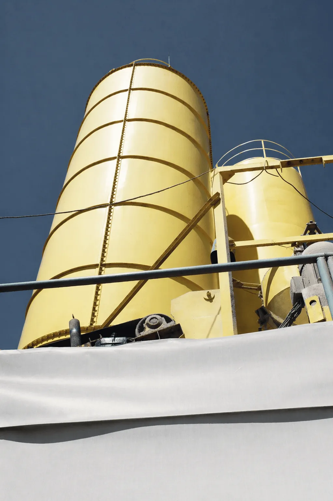

A fundaçãocomeça na fábrica.
Há 35 anos a IPR fabrica e crava estacas protendidas de concreto. Central própria, ensaio de cada lote e frota própria: do insumo à nega, a mesma equipe responde pela estaca.

Uma fábrica inteira por trás de cada estaca.
A IPR controla a cadeia toda: escolhe o insumo, dosa o concreto na central própria, traciona os fios na pista, rompe os corpos de prova, inspeciona peça a peça e leva a estaca até a obra.
É assim que a fundação pré-fabricada transfere a complexidade para a fábrica e transforma o canteiro em montagem técnica. Atendemos clientes públicos e privados, do projeto à cravação.

Infraestrutura industrial
Unidades fabris e complexos logísticos com grandes áreas e cargas concentradas.
Obras civis
Empreendimentos residenciais e comerciais com cronograma e canteiro enxutos.
Infraestrutura
Pontes, viadutos, portos e linhas de transmissão em solos e acessos exigentes.
Da matéria à nega, em cinco estações.
Cada página deste site é uma etapa real da fábrica. Siga a estaca na ordem em que ela é feita.
-
A matéria

Central de concreto
Cimento, areia e brita pesados em balanças calibradas. O traço de laboratório repetido a cada ciclo.
Ver a central -
O aço e a forma

Pista de protensão
Fios de aço CP-175 tracionados entre as cabeceiras antes do concreto. A força fica guardada dentro da estaca.
Ver as estacas -
A cura e o ensaio

Laboratório
Corpos de prova rompidos com 24 horas, 3, 7 e 28 dias. O lote só segue quando o fck aparece na prensa.
Ver o controle -
O estoque

Pátio e expedição
Peças curadas e inspecionadas esperam a obra sobre calços, prontas para subir na carreta.
Ver a logística -
O solo

Cravação
Frota própria até o canteiro. Golpe a golpe, a estaca desce pelas camadas do solo até a nega.
Ver a fundação


Golpe a golpe, até a nega.
Posicionamento e prumo
O bate-estacas é posicionado sobre o ponto locado em projeto. A estaca é içada e aprumada na torre-guia, garantindo a verticalidade antes do primeiro golpe.
Cravação sem escavar
O martelo aplica golpes sucessivos e a estaca avança pelas camadas do solo. Sem retirada de terra, sem lama bentonítica e sem sobra de concreto no canteiro.
Emenda com anel metálico
Para profundidades maiores que 10 m, um novo segmento é posicionado e unido por solda nos anéis de emenda, mantendo a continuidade estrutural.
Controle da nega
A penetração final para um número determinado de golpes, a nega, e o repique elástico são medidos na hora e confrontados com o projeto, estaca a estaca.
Três geometrias.
Onze seções.
Concreto C40 e fios de protensão CP-175 RB, em segmentos de 6, 8 e 10 m com anéis de emenda. Cada seção tem o seu ábaco no catálogo técnico.
Circular
Seção maciça de 20 a 30 cm, de 402 a 978 kN de compressão pela NBR 6118.
Ver seções Ø 17 · 21 · 28 · 33 · 40 · 45 cmHexagonal
Maciça de 17 a 33 cm e linha vazada 40 e 45 para cargas elevadas.
Ver seções 30 × 30 cmQuadrada
8 fios Ø 6 mm e 1.276 kN de compressão pela NBR 6118.
Ver seçãoQuem já está de pé sobre estacas IPR.
Indústria, varejo, energia e bens de consumo. Ver todos os clientes


